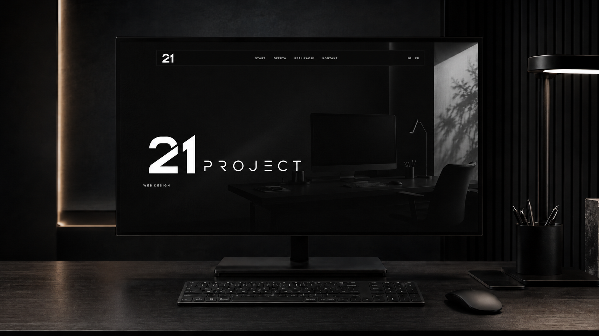

Strony dla firm
Nowoczesna strona internetowa dla firmy usługowej, lokalnej marki albo małego biznesu — z ofertą, portfolio, kontaktem i strukturą pod wyszukiwarkę.

web design / strony internetowe / 21project
21project tworzy minimalistyczne strony dla firm, które chcą wyglądać profesjonalnie, budzić zaufanie i prowadzić klienta do kontaktu bez zbędnego chaosu.

Pierwszy ekran ma sprzedać poziom firmy.
Manifest
Dobra strona nie musi krzyczeć. Ma sprawić, że firma wygląda jak oczywisty wybór.
Oferta
21project projektuje strony internetowe, landing page i reworki istniejących witryn. Minimalizm zostaje, ale układ prowadzi użytkownika do decyzji.
Nowoczesna strona internetowa dla firmy usługowej, lokalnej marki albo małego biznesu — z ofertą, portfolio, kontaktem i strukturą pod wyszukiwarkę.
Jedna mocna strona pod konkretną usługę, kampanię, produkt lub zapis. Duży nacisk na pierwszy ekran, argumenty, FAQ i szybki kontakt.

Przebudowa istniejącej strony, która wygląda zbyt zwyczajnie, nie prowadzi do kontaktu albo nie pokazuje realnego poziomu firmy.

Portfolio
Każdy projekt jest pokazany w wersji desktop i mobile, bo strona musi robić wrażenie na laptopie, ale sprzedawać też na telefonie.
Strona dla usługi lokalnej, która od razu prowadzi użytkownika do konkretnego kontaktu i pokazuje firmę jako pewny wybór.
Układ zaprojektowany pod szybkie zrozumienie zakresu usług, realizacji i następnego kroku.
Spokojna, obrazowa strona dla branży wnętrzarskiej — mniej hałasu, więcej klimatu i jakości pierwszego wrażenia.

Kierunek
21project nie buduje stron na zasadzie przypadkowych sekcji. Najpierw powstaje scenografia: pierwszy ekran, tempo przewijania, argumenty i moment, w którym użytkownik ma kliknąć kontakt.
Strona ma od razu wyglądać drożej niż konkurencja.
Mało tekstu na ekranie, ale każdy blok ma konkretną funkcję.
Użytkownik nie szuka drogi. Strona prowadzi go do następnego kroku.
SEO bez ściany tekstu
Pozycjonowanie zaczyna się od porządku: nagłówków, treści, szybkości i strony, której użytkownik nie zamyka po trzech sekundach.
Proces
Proces jest prosty: kierunek, projekt, kod, publikacja. Bez dziesięciu spotkań i bez robienia strony, która wygląda jak każdy szablon.
Ustalenie branży, celu, stylu, treści i tego, co klient ma zrobić po wejściu na stronę.
Układ strony, sekcje, rytm przewijania, grafika i pierwsze wrażenie.
Czyste HTML, CSS i JS albo wdrożenie w ustalonym systemie. Responsywnie i lekko.
Publikacja, domena, podstawowe SEO, analityka i późniejsze poprawki.
FAQ / SEO
Tak. Strona dostaje poprawną strukturę nagłówków, meta title, opis, alt-y obrazków, szybki kod i treści pod frazy takie jak strony internetowe dla firm, landing page, rework strony i projektowanie stron internetowych.
Tak. Minimalizm nie oznacza pustki. Krótkie teksty mogą sprzedawać, jeżeli są dobrze ustawione w strukturze strony i odpowiadają na realne pytania klienta.
Tak. Projekt jest robiony mobile-first, więc menu, portfolio, kontakt i wszystkie sekcje mają dobrze działać na małych ekranach.
Kontakt
Wystarczy krótki opis branży, link do obecnej strony albo profilu i informacja, co strona ma robić: zbierać zapytania, sprzedawać usługę, pokazać portfolio czy zbudować zaufanie.